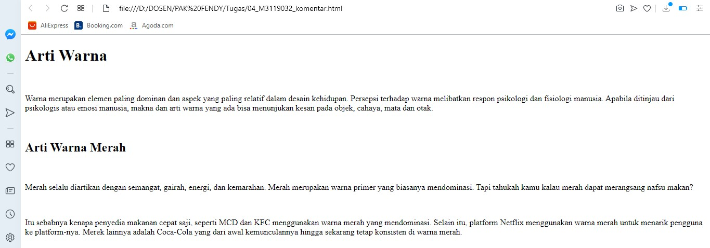

Memberi Komentar
Dalam penulisan kode program di HTML, tentunya perlu menuliskan komentar pada beberapa potongan
kode program yang ada di dokumen HTML. Komentar sangat berguna untuk memberikan keterangan pada kode HTML.
Codingan
<!DOCTYPE html>
<html>
<head>
<title>Memberi Komentar</title>
</head>
<body>
<h1>Arti Warna</h1>
<br/>
<!-- Paragraf pertama Arti Warna -->
<p>
Warna merupakan elemen paling dominan dan aspek yang paling relatif dalam desain kehidupan.
Persepsi terhadap warna melibatkan respon psikologi dan fisiologi manusia.
Apabila ditinjau dari psikologis atau emosi manusia, makna dan arti warna yang ada bisa menunjukan kesan pada objek, cahaya, mata dan otak.
</p>
<br/>
<h2>Arti Warna Merah</h2>
<br/>
<!-- Paragraf pertama Arti Warna Merah-->
<p>
Merah selalu diartikan dengan semangat, gairah, energi, dan kemarahan.
Merah merupakan warna primer yang biasanya mendominasi.
Tapi tahukah kamu kalau merah dapat merangsang nafsu makan?
</p
<br />
<!-- Paragraf kedua Arti Warna Merah-->
<p>
Itu sebabnya kenapa penyedia makanan cepat saji, seperti MCD dan KFC menggunakan warna merah yang mendominasi.
Selain itu, platform Netflix menggunakan warna merah untuk menarik pengguna ke platform-nya.
Merek lainnya adalah Coca-Cola yang dari awal kemunculannya hingga sekarang tetap konsisten di warna merah.
</p>
</body>
</html>
Hasil codingan

Analisis
Gambar diatas merupakan script untuk memberi komentar. Tampak pada codingan menuliskan 3 komentar.
Tetapi pada hasil codingan tidak tertampil dan hanya akan tertampil di script coding.
Back